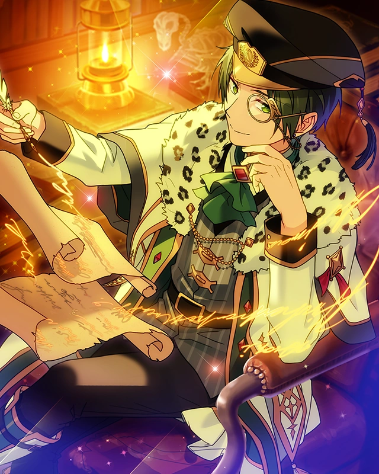
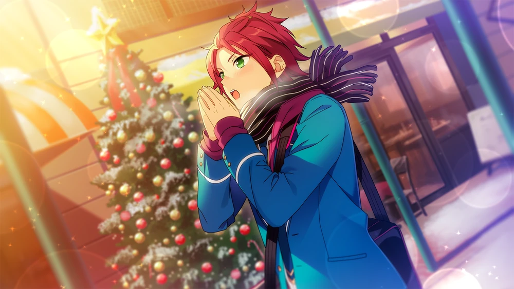
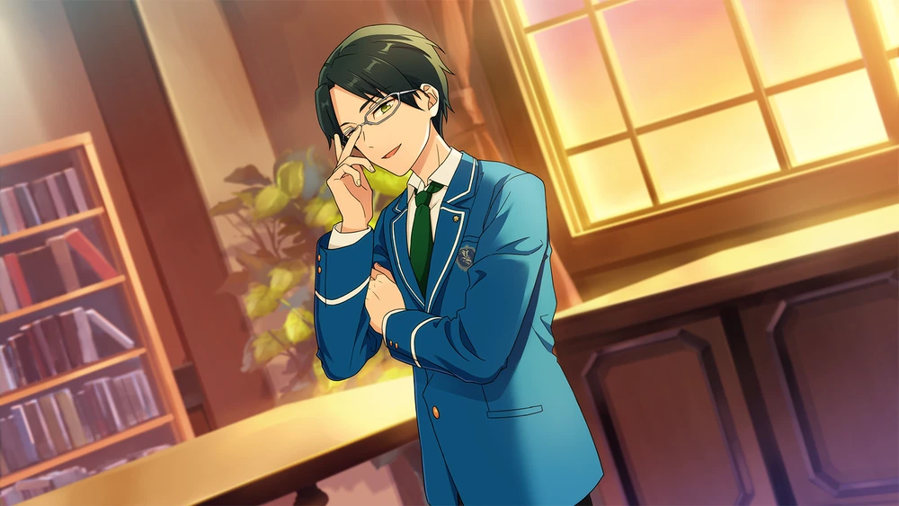

Philosopher's Guidance



Chapter 1

…
… Mm–mngh? Morning already? I should’ve set my alarm clock, but I guess I forgot…?
(Mnn. This feels hard for a futon, though.)
(With how angled it is, it’d be more appropriate to call it wood than a futon. I can’t imagine I turned over in my sleep and ended up on the tatami though.)
(If that’s the case, I must have fallen asleep somewhere other than my room.)
(Last time this happened, I tried to doze for a while in a flower bed, and I just ended up sleeping all the way through.)1
(Naturally, it’d be a catastrophe to fall asleep outside at this time of year. At worst, you’d freeze to death.)
(My body doesn’t feel cold, so I must have succumbed to exhaustion and fallen asleep indoors.)

… Mn?
(What did my fingers just brush against? It looks like a can, but I can barely make out the words.)
(An energy drink…?2 I see, that’s right. I remember now.)
(From the year-end Starfes8 to SS9 to all kinds of Dream Festival big and small, there’s much to do in terms of preparation. And Eichi’s planning to establish a new S3 rank on top of that.10)
(The student council only has so many hands, and yet the frequency of Dream Festival just keep increasing, so I have all those proposals to read.)
(Having to go around on my own to inspect all the different venues as an auditor must have really worn me down.)
(I’m still young enough to handle some all-nighters, so I'd been supplementing them with energy drinks to fight off sleep, but it seems I've finally hit my limits.)
(I'm so wiped I couldn't even immediately remember that I was here in the student council room because I was doing work.)
Honestly… I’m so busy, I’d take any help— any help at all. No matter how many tasks I knock out, two or three more tasks take its place.
Well, this is no time to whine. Isara has his own duties I’ve entrusted him with, and if I can't handle what I have here, it'll end up on the shoulders of the rest of the student council officers.
Thankfully, I managed to get a quick cat nap in. First thing's first, I need to paw through the documents on my desk, and work my way through the rest after school…
And if I can divvy up the work suitably enough, then I can go home.
Well, I’ll give it one more big effort. Isara’s already got his orders. What’s left is for me to get my job done.

P—… Par~don me.
Hm? You're… Yuuki, right?
What business do you have here? I don’t intend on calling you my enemy at this point, but we certainly aren’t close either.
Well, whatever. Make it quick. More and more work is piling up as we speak.
Time is money as they say. You are a member of Trickstar as well, so you ought to be very busy with StarFes and the SS…
Hm, the preparations for SS are going smoothly.
There seem to be no major issues as of now. You can rest easy, and do your best to practice for the day the approaching SS comes.
Errr, that’s not what I came here for. I was making the next script for the broadcasting committee’s lunch segment, so I thought I’d have you look over it.
The lunch segment...? Why are you coming to me about a broadcasting committee matter?
I don’t really get it. The student council was very involved in both the “lunch segment” and the “school-happenings television program” until spring.
Now, I imagine things have become more free.
I have far too much on my plate to handle with managing Dream Festival, personally, I just can't take on anymore work.
Keeping eyes and ears out on everything that's happening here is just completely out of the questions.
Recently, I’ve leaving more and more work to the Producer, but it still makes me uneasy.
Anzu is the only student in the Production Course. If she takes on all of the work there is to do, it wouldn't be long before she collapsed. We need to distribute the burden and lighten the workload.
From next year onward, the Production Course will have actual procedures in place.
If Anzu skillfully takes the lead on work, it would lighten the load on the student council, and I’m sure that the Dream Festival would only just get more lively.
… Sorry, I was digressing. At any rate, you don’t need me to look over your script.
The broadcasting committee club has Nito, so if you don’t feel confident, why don’t you ask him to look it over?
I’d love to do that more than anything else, but it looks like Nito-senpai’s really, really busy with the Starry Night Festival,11 so I don’t want to bother him.
I heard Shinobu-kun was participating in the Starry Night Festival too…
I’m taking over the broadcast for tomorrow because I figured I could fill in.
Hmm, you’re a good-natured person too. I’m quite sure the Starry Night Festival is an unofficial match.
Eichi is participating in it too, but I don’t see the point in him throwing himself into a battle where nothing’s at stake, especially since he’s prone to falling ill in the wintertime.
Honestly, how incorrigible. You’re far too indulgent, Eichi.
… Well, what’s the point in scolding someone who isn’t even here? Eichi has his own way of thinking.
Anyways, so you came to me after you took over Nito’s work. I’ll commend you for that.
But like I just said, I don’t intend on interfering with your broadcasting committee work as a member of the student council. If you’re even a broadcasting committee member in name only, you should surely have experience writing a script.
Even if the content vastly deviates, there’s nothing for me to say.
Or what, does the script contain something that denounces the student council? If that’s the case, I can’t surely send it back with you no questions asked.
I’m on edge from sleep deprivation. It’s been a while since I’ve given a long sermon, but maybe I should give you one to let off some stress.
H-Hold on now, wait a second here!?
We were at conflict with each other back around spring, so…
We’ve been able to build something amicable, and that’s exactly why I’m not trying to destroy relationships~?
Isara-kun’s in the student council after all. I wouldn’t want to do anything like ruin a place that’s super important to Isara-kun.
I was under the impression his most precious place was being beside you all, though?
Anyways, with that said, I’ll be going back to work. I truly do not have the time.
At this rate, today might be another day I can't go home. My body’s so stiff. I don’t mean to complain about wanting to my futon, but...
I just want to free myself of this exhaustion so I don’t bring it into tomorrow.
Chapter 2

Um, you said that you were sleep deprived… Have you been that busy with work?
I’m so busy I can barely put it into words. As you very well know yourself, there’s the StarFes and SS.
It seems Anzu is handling the project and management, but I’ve also heard other unofficial matches will be taking place as well.
I’m also the captain of the archery club, so I need to show up to those club activities as well.
Uwaaa. You weren’t joking… You really are busy.
I feel kinda embarrassed I thought I was super busy with broadcasting committee work, and practicing for StarFes and SS.
Hasumi-senpai, Isara-kun doesn’t seem to be doing any student council work… Where is he? I don't see him around.
Hm? Ah, right, he's on a certain mission I assigned to him.3 Don’t go digging into it. Any outsider who paws around the student council’s matters will only be kicking a hornet’s nest.
R–Right. I’ll make sure to keep that in mind…
I want to say something that might be considered getting into your business, but… Even so, I can’t just stand aside.
When Isara-kun complains about how busy things get and how unreasonable it is, he does it with a smile, and it makes me want to support him and tell him to do his best. That said...

I can’t say I’m able to say, “Do your best,” when you have such deep bags under your eyes and when energy drinks are barely pushing you over the finish line.
Hasumi-senpai. If there’s anything I can do, please let me help. The smallest thing, anything, I want to help.
You… You’re absolutely, incorrigibly good-hearted, hm? It’s like you come alive when you’re entrusted with work?
Isara and Fushimi… and Anzu too. You’re all people who love to work, I’m nervous you guys are going to take my job away.
No, that would actually be a great help right now… Even so, there’s no work for me to leave to you. Just your feelings are enough for me.
Uuu, is that so…? I wondered if there was anything I'd be able to do, but if anything, I was just more of a problem. Ahaha, I’m such a failure, huh?
Do you move and work to be of service to people? Is that of your own will?
Huh? Uhh, what do you mean…?
If you don’t know then nevermind. Hmm… I’ve changed my mind. There is something you can help me with.
Naturally, I can’t leave student council work to anyone outside the student council, so...
A teacher just asked me about a matter regarding animal pens. That’s what I can leave to you.
Hmmm, it’d help if you told me a little more about what you needed my advice on with the animal pens~
Ah, but if I’m supposed to figure it out on my own, I’ll do my best!
Hold on now. The detailed materials are here… Hm?
Huh? Anzu-chan? Yoo~hoo~☆ Did you come here to the student council room to talk to Hasumi-senpai about something? Or were you looking for Tenshouin-senpai?
Oh yeah, wait, Tenshouin-senpai isn’t here... Maybe he left for lunch or something?
As I said earlier, Eichi is prone to sickness in the winter. It looks like if he's well enough to come to the academy, there probably isn't something to worry about, but… more importantly… Anzu.
What business do you have here in the student council room?
H—Hasumi-senpai? Why are you staring at Anzu-chan like she killed your parents? Even Anzu-chan’s intimidated by your aura…?
Sorry, I didn’t mean anything bad by it. Don’t cling to the door like that and come over here.
Anzu. Eichi… No, nevermind. If I don't know whether you are my enemy or not, I won't be able to quash my suspicions. As you can see, Eichi isn’t here.
If you have business with him, it’ll have to be another time… Hm? Do you have business with me?
I have my hands full with you and Yuuki. Isara and the other members of the student council are deployed, so I'll have to be the one to deal with whatever it is. So? What do you need?
… A bento? Oh yeah, I suppose I haven’t eaten lunch. If I took a spare moment to eat, the work would pile up on my desk before I knew it. … I know, I need to eat too.
I’m human too, after all. No matter how busy I get, if I don’t eat, I’d die.
I should’ve had breakfast this morning... I can’t quite recall, but I was able to drink my energy drinks, so it's fine.
Hm. Are you trying to tell me energy drinks aren’t enough nourishment?
I can’t quite remember if I ate something for breakfast, so maybe I should have some lunch.
What is it, Anzu? It looks like you’re smiling… or more like smirking and relaxed. It’s a little creepy.
A–Ahh. “Creepy” isn't the word I should use. On the topic of the bento, did you come here to come and invite me to eat lunch together?
Well, be that as it may, I didn’t bring a bento for myself. I wonder if there’ll be anything left at the school store if I went and made a quick run…?
“Ta da~aaa!” …? Don't make weird sound effects. If there’s something you want to say, just say it...
Hm? You made a bento box for me? You did?
Huhhh? A bento made by Anzu-chan!? Since when did Hasumi-senpai level up his relationship with Anzu-chan…?
Hey, don’t misunderstand this. She and I have no secret relationship.
Isara asked you to…? Hmnmnn. He had matters I assigned to him, and StarFes and SS on top of that.
That guy’s the one who’s busy… and yet he thinks about other people… Honestly, that’s Isara alright ♪
So Isara-kun asked you to bring him a bento, Anzu-chan?
That’s definitely like Isara-kun to worry about the wellbeing of a supervisor, how respectable!
Me…? A—Are you asking me if I ate lunch? Ahaha, to be honest, I haven’t eaten either~
I just wanted to show someone from the student council my lunch segment script and figured I’d eat after I got approval, so I didn't buy bread from the school store.
Huh? Do I want to eat with you guys too? R—Really? If I’m being a nuisance, you can tell me Hasumi-senpai.
Don't make me say it again. She’s invited you out. Do what you want.
My first question is whether this bento has soybeans… Ah, I see, if there’s none here, that’s good.
I’m not so much of a fool as to do away with the good will shared upon me. Work is important, but rest is important too. I’m worried about falling behind on work, but… I’ll just make up for it after school.
Chapter 3

Hasumi-senpai, is it really okay for us to eat in here? If we’re not allowed to, we can go somewhere else?
Don’t worry, food and drinks aren’t prohibited here. Eichi keeps the tea leaves he brings from home on that shelf over there for safekeeping.
Let’s see… Apparently, 100 grams is worth ¥20,000.4
Eek, it’s that expensive!?
To you perhaps, but this one seems to be on the cheaper side for him. I’ve heard that he owns tea blends that are worth millions for that same amount.
T-That sounds like something out of a completely different dimension… There are tons of rich guys here in the student body of Yumenosaki, but Tenshouin-senpai really is in a league of his own.
I wonder what he usually eats. Foie gras, maybe?5 He must have such a discerning palette, I feel like the food at the cafeteria might not be good enough for him.
He seems more or less vigilant of what he’s usually eating, but that doesn’t mean he never eats in the cafeteria.
I’m pretty sure he has an interest in plebian-ish flavors, after all.
Hmm. It probably feels novel to him because he’s never had it before.
…? Anzu-chan, you’ve been staring out the window for a while now. Is there someone you know out there?
Ahh~ “The weather is nice outside, so why don’t we go eat out there”? Like a picnic? I bet a bento would be even tastier like that ♪
It’s daytime, so I’d say the temperature is a little warmer. Even so, it is winter. If we went outside to eat, wouldn’t we catch a cold?
Ah, you’re right about that, huh… What should we do, Anzu-chan? We could eat in here? We could try going to the rooftop to assess the situation?
Hmph, don’t hold back now. It wouldn’t take much time to go to the roof and come back here.
Come, let’s go and see. If the temperatures seem too bitter, we’ll just eat in the student council room. How’s that sound?
You’re a surprisingly sweet guy, huh, Hasumi-senpai…?
In the beginning, I just thought you were a strict guy and that’s all there was to you, but the more I try talking to you, the more my impression changes.
Now you don’t seem so scary, and I kinda see why Kanzaki-kun looks up to you ♪
Flattery will get you nowhere. So you and Anzu are in the same class as Kanzaki…? Hmm, please continue to get along with Kanzaki.
That guy’s got no common sense, but he’s an earnest, single-minded guy.
His cooking ability progresses with each passing day, and he makes these wonderful high-grade Japanese sweets. He’s someone you can always be proud of...♪
You look totally like a dad who’s proud their kid has grown up. Ahaha, I might’ve caught a glimpse at Hasumi-senpai’s unexpectedly true face ♪
Hm… What is it, Anzu? Ahh, are you worried all the good seats will be gone?
Alright. Anzu, Yuuki, let’s go.

I–It’s… s-s-so cold out!
Y-... Yeah. It’s winter, so if you’re lightly dressed without a coat, you’ll catch a cold. Let’s just go back to the student council room… Hm?

♪～♪～♪
You—What are you doing in a place like this? It may not be snowing but it’s still freezing outside. You’ll catch a cold if you stay out here.
Oh? Oh me, oh my, we’ve all gathered here together ☆ As you can see, I’m in the middle of a meal, so could you do me a favor and save your business until I’ve finished eating?
… It's so cold out you can see your breath. This isn’t the kind of place to enjoy a leisurely bite. Look around you, do you see anyone else out here?
I knew you lacked common sense, but to think you’re this much of a fool. I’m so stunned I can barely speak, you could even say it’s dizzying.
Dizzying? How terrible! You’ve gone as white as a sheet, are you alright? Shall I call you an ambulance? Or shall I fly you away to the hospital in my blimp?
Stop that, you’re making me even dizzier. I’m sure the lack of color in my face is from sleep deprivation, so there’s nothing for you to worry about.
It doesn’t seem like it’s merely sleep deprivation, you look malnourished too?
Times like this call for my special deluxe jello…☆ Fufufu. A seven-colored jello, nice and rainbow…☆
Don’t just shove it at me without hesitation. Why are you so unnecessarily lively, how incorrigible…
Well, this is just the role desired of me, so all I am doing is fulfilling it.
More importantly, what brings you two up here to the rooftop, Mr. Right-Hand Man?
I can wrap myself up in my long hair to keep warm, but the same can’t be said for you, I fear? You can take my hair and rest in on your lap as a blanket if you’d like.
Don’t just surpass the limits of the human body like that, just hearing you talk drives me nuts.
Fufufu, and yet, you’ll still listen to me, hm? You have a sweet demeanor amongst all that ruthlessness… Though I suppose that’s what makes you so darling.
And you’re not the only megane here, it seems Yuuki-kun is with you too. This might be what they call being flanked by two beauties… Being a producer has its advantages, doesn’t it, Anzu-san ♪
Oh? Oh, oh, ohhh? Fufufu. Is that a bento made by a loving wife? Oh, you’ve really done it now Keito-kun…☆
Stop beaming so smugly like that. Yes, Anzu made this bento for me, but it’s not like that. Don’t get the wrong idea, here me?
If anything, you’re the ones asking for a misunderstanding, but…
Oh, very well. Yet, here you all are looking to have lunch on the roof after chastising me for the very same thing, hm?
… Well, I suppose we are. I don’t think I can eat in this blustering winter weather, though…
You get used to it, surprisingly. Not many people come here, so you can decompress without anyone coming out here to bother you.
Now then, now then. I wonder if Hokuto-kun will be able to find me before lunch break ends.
I left behind some hints, so I have full faith in him that he’ll be able to make his way up here.
What's this about Hidaka? Are you putting the drama club members through the wringer again?
Honestly, you take your pranks too far.
The fact that Hidaka and Mashiro have stayed with you all this time despite it is something of its own. They’re good juniors, so you’d better cherish them more.
Chapter 4

I cherish them in my own way, you know. There are as many ways to love someone as there are people. Purely spoiling them isn’t love.
You have a point, but the way you love is hard to grasp.
I suppose it’s easier said than done, telling others to treat their juniors more kindly. It isn’t as if I completely get how to treat my own juniors.
You… love the theatre, I know that much. And those two feel the same way too. That's why they can keep up with your wild theatrics.
I don’t know what kind of test you’ve imposed upon them, but don't blame Hidaka if he doesn’t make it up here.
If you put too much pressure on him, it may bleed into his faith when it comes to SS. I don't want to treat him like he’s fragile, but there’s a time and place for everything.
You should urge his growth by praising him. Well, being too sweet on him is a problem itself, though.
Fufufu, it seems you’re having troubles of your own rearing the juniors, hm?
There is no one right answer to rearing a child after all, so trial and error is the natural way to go about it.
When it comes to the carrot and the stick, I don't just give them the stick.
Well… No, it wasn’t just them. Any new recruits interested in the drama club were given the stick right at the door, and as a result, those two remained.
It was refreshing making a clean sweep of all the posers who came and proclaimed, “I just wanna have a go at theatre~”
On the other hand, I feel sad at the thought of my beloved children losing faith in me.
My heart pulled in two different directions…! This is certainly love! Amazing…☆
So that’s your deal in the end…
Oop, I just saw the shadow of a person come this way. It looks like it's Hidaka, he must have found all the hints you left him.
Start by praising him.

… I’ve been looking for you, Buchou. You said there was something you wanted to ask you about regarding our next performance.
Don’t you feel even a little bad you gave me some kind of incomprehensible code?
How splendid…! It pleases me beyond belief that you were able to crack the code without letting me down, you know.
And now here is your prize, as Keito-kun said. Let me pet you on the head. Good boy, good boy… ♪ (Pets him)
Are you looking down on me? Or actually, how long have you been up here? Your hands are freezing. They’re far colder than mine, aren’t they?
Mn~ About a few dozen minutes, but you’re such a good kid to worry about my health, hm? Gooood boy, good boy…♪ (Pets him)
Like I said, stop petting my… Hm? Anzu? Yuuki? And Hasumi-senpai? It’s rare to see all of you together.
We had business with the student council, and one thing after another, we ended up having lunch together. Did you already eat, Hidaka-kun?
Yeah, though it was a quick bite.
I imagine you’re done eating, Buchou. It’s time to go, let’s go back to the club classroom already.
All Tomoya and I can really do by ourselves is a read-through of the script.
We can't go into the details with you gone, so we were stuck until then.
It can’t be helped, hmm? You could melt snow when you request for me with such passion…☆
Just wait a little longer. Once I eat my after-lunch dessert we can go to the clubroom right away, alright? It was quite a labor of love, you know. Here, have some too, Hokuto-kun ♪
Rainbow jello… was it? It’s quite pretty, it seems like it would delight children.
You seem interested in it, hm, Hokuto-kun? Hasumi-kun, the rest of you, please eat up too.
There’s mystery with every bite, and you’ll gain the ability in your body to stay awake for three days and three nights straight, you know ☆
What kind of miracle medicine is that…? Hidaka, you sure do jump through hoops, hm?
You’re a valuable, talented person who has kept up with Hibiki. Don’t lose no matter what it takes. I’ll support you any way I can.
Thank you very much. I’m sure I'll need to bother you about Buchou a lot, but I appreciate your continued support.
Mhm, if we were in the same year, I feel like we might have become good friends...
Hidaka-kun and Hasumi-senpai have some mysteriously close affinity, huh…? Don’t you think so too, Anzu-chan?
Ahh, sorry. You’re really digging into that jello. Is it really that good?
Ahaha, you’re nodding your head really enthusiastically, you make me wanna give it a try.
Lemme have some too~... Mmn, it’s delicious!
You said it could keep you up for three days and three nights, so I was a little suspicious, but it tastes the normal kind of sweet, It's it’s delicious ♪
Do you consider yourself someone big into cooking, Hibiki-senpai?
Hmm~ If I had to say, I suppose I am.
The cuisine in the cafeteria is delicious, but once you have enough of your own cooking, it can feel a little insufficient.
I made that jello normal, without any mischief in mind, so I imagine it tastes normal.
My bento is made with a little more surprises in mind, so I adjusted some of the flavors. Would you like to try this too?
Huh!? I’m not really an adventurous kind of person. Uhhh, I think I’m okay with Anzu-chan’s!
Oh my, have I been rejected? Well, I imagine it’s because a woman’s touch is better than a man’s touch when it comes to cooking, hm?
I’m interested in Anzu-san’s cooking too. Let’s switch bento boxes next time.
It’s like we’re close friends~ Or perhaps like we’re newlyweds cooking in the kitchen together? Ahahahaha…☆
Buchou, you’re putting Anzu in a tough spot. Actually, how long are we going to stand out here and take our sweet time?
I’m worried about Tomoya, I just left him back in the clubroom. He might have just fled from the room out of a feeling of abandonment.
Abadonment... You seem pretty overprotective of Mashiro-kun, Hidaka-kun. Does everyone feel that way when they have a junior of their own?
What about me? I do have juniors in my clubs and committee, but..
I’m not in the position where I can lead them myself. I feel like I need to grow myself first before anything else.
I hate to part, but every play has its curtain call. It's wrong to stay on the stage just because you're having fun.
Only when the stage ends can the curtains rise for an encore.
Let us go, Hokuto-kun. Our lives have only just begun…☆
… That man is like the eye of a hurricane.6 We should be heading back soon too. My hands are getting numb, so I’d like to warm my bones up with a nice cup of tea.
Do you two like roasted tea?7 It warms you right up. I’ll make some specially for you two, I’m itching to put my skills to good use ♪
Translation Notes
- ↑ This happens in Flower Festival.
- ↑ 栄養ドリンク (eiyou dorinku) have both nutritional qualities and energy qualities, and are used for fatigue recovery and nutritional supplementation. These are different from エナジードリンク (enajii dorinku), which are more like our sugary American energy drinks.
- ↑ This might be about the secret mission Keito gives Mao in Agents.
- ↑ This is about $1500 USD.
- ↑ Foie gras is a luxury French delicacy made from duck or goose. Do note that its production is considered unethical for animal welfare.
- ↑ Meteorology note: Technically the eye of the hurricane is the calmest part of the storm. He probably means the eyewall, the most turbulent part.
- ↑ ほうじ茶 (houjicha) is a green tea that's roasted at high temperatures instead of being left unroasted.
- ↑ Starlight Festival is an S1 Dream Festival themed around Christmas that occurs in Starlight Festival.
- ↑ SS is a showdown between Trickstar and Eden that occurs in this story.
- ↑ Eichi establishes the new S3 rank of Dream Festivals starting with the story Dream Travel.
- ↑ Starry Night Festival is a B1, featuring a large unnamed temporary unit including Nazuna and Shinobu, that takes place in the story Starry Night Festival.